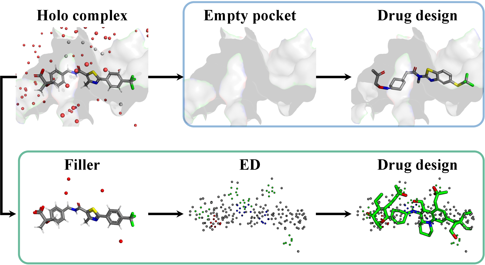
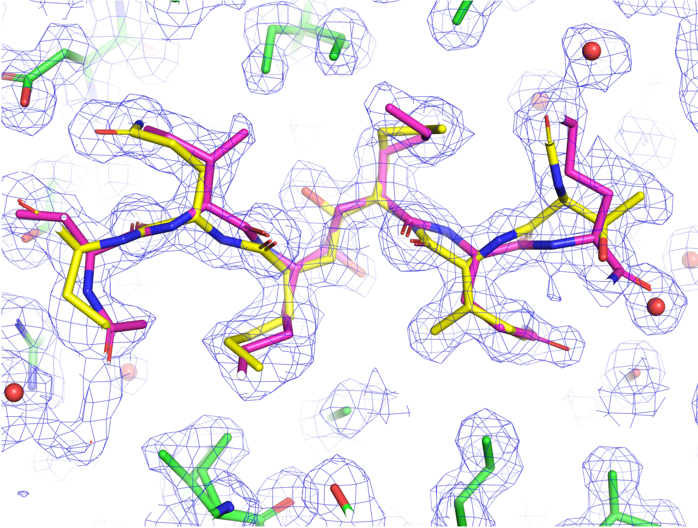
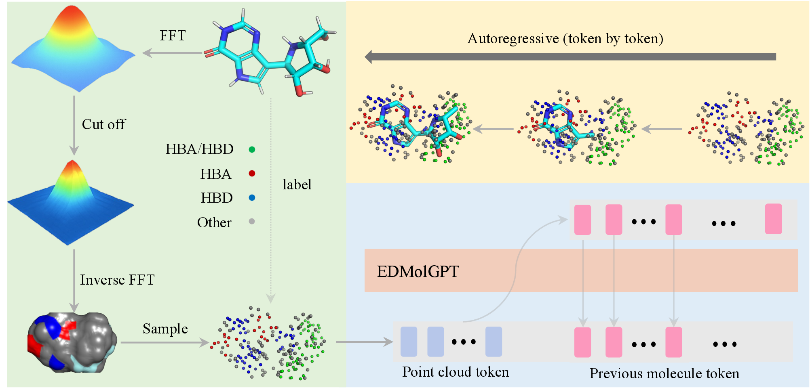
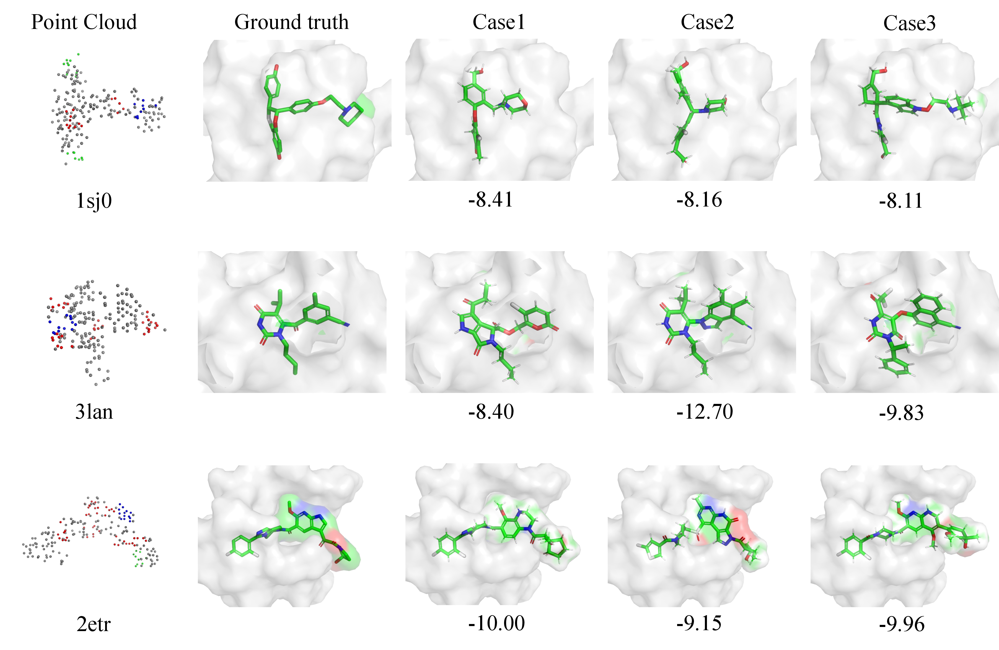

Abstract
Recent advances in generative modeling have enabled significant progress in structure-based drug design (SBDD). Existing methods typically condition molecule generation on empty binding pockets from holo complexes, overlooking informative components such as the filler (ligands and solvent). Here, we leverage low-resolution electron density (ED) derived from the filler as a physically grounded condition for de novo drug design. We consider two types of ED—calculated and cryo-EM/X-ray—obtainable from computational or experimental sources, supporting unified pre-training and experimental integration. Compared with rigid pocket representations, experimental ED naturally captures conformational flexibility and provides a more faithful description of the binding environment.
Based on this, we introduce EDMolGPT, a decoder-only autoregressive framework that generates molecules from low-resolution ED point clouds. By grounding generation in physically meaningful density signals, EDMolGPT mitigates structural bias and produces molecules with 3D conformations. Evaluations on 101 biological targets verify the effectiveness. Our project page: https://github.com/JiahaoChen1/EdMolGPT_Code.git.
Introduction
Generative AI models applied in structure-based drug design (SBDD) have revolutionized the field for their ability to generate ligands spatially compatible with a binding pocket's 3D architecture. Despite this success, most current AI molecule generation models for SBDD overlook the dynamic nature of binding sites by assuming a static pocket representation. As illustrated in Fig. 1, modeling the pocket as a rigid structure fails to capture the intrinsic flexibility of proteins and their conformational changes upon ligand binding. Such oversimplified representations create a mismatch between the modeled pocket and its biologically relevant states, posing significant challenges for accurate molecule generation and potentially reducing the success rate of identifying truly active compounds.

Figure 1: Comparison between pocket-based drug design (blue-circled region) and our electron density (ED)-based drug design framework (green-circled region). The red dots denote the solvent. Filler is defined as all elements within a 4.5Å radius of the ligand, excluding the binding pocket.
To address this limitation, many approaches in related fields have sought to account for protein flexibility. For example, pocket ensemble-based methods partially address this limitation for molecular docking, but they are difficult to integrate into molecular generation frameworks, which typically require a unified and fixed conditioning representation rather than a collection of discrete conformations. Experimental electron density (ED) offers a promising alternative, providing a continuous, physics-grounded representation that encodes ensemble-averaged spatial distributions, physicochemical environments, and interaction patterns, thereby avoiding reliance on rigid geometric abstractions.
While recent studies have explored molecular generation using experimental ED of binding pockets, in practice pocket ED is frequently weak or poorly resolved in highly flexible regions, precisely where conformational variability is most pronounced, leading to unstable or ambiguous conditioning signals for learning-based models. In contrast, filler ED is typically well-defined, experimentally validated, and spatially localized, providing a more reliable and informative conditioning signal for generative modeling.
Methodology: EDMolGPT
Electron Density Representation
Calculated Electron Density (CalED)
Derived analytically from atomic coordinates using physical scattering models for efficient pre-training.
Experimental ED (ExpED)
Obtained from cryo-EM/X-ray experimental reconstructions, capturing measurement noise and conformational flexibility.

Figure 2: Experimental ED reflects conformational dynamics of a filler in a protein pocket (PDB ID: 6KMP). The experimental ED map is shown as blue mesh, representing the ensemble-averaged electron density derived from X-ray diffraction. Protein atoms are shown as green sticks. The ligand is shown in yellow and purple sticks, with colors corresponding to alternative conformations resolved in the density, indicative of conformational dynamics in the bound state. Water molecules are shown as red spheres.
EDMolGPT Architecture
We propose EDMolGPT, a decoder-only autoregressive framework for 3D drug design conditioned on low-resolution ED represented as a point cloud. Key features include:
- Decoder-only architecture: Combining simplicity, flexibility, and high efficiency
- ED point cloud conditioning: Reordered by spatial coordinates for GPT-style processing
- FSMILES representation: Captures rational molecular conformations
- Two-stage training: Pre-trained on large-scale CalED, fine-tuned on ExpED

Figure 3: EDMolGPT pipeline
Experiments
Dataset
We evaluate EDMolGPT on the DUD-E dataset, which contains 101 biological targets with experimentally validated active ligands and property-matched decoys. The dataset covers diverse protein families including kinases, proteases, GPCRs, nuclear receptors, and ion channels.
Key Results
Bioactive Molecule Recovery
EDMolGPT demonstrates superior recovery of bioactive molecules compared to existing methods. The model generates compounds with high ECFP4 Tanimoto similarity to known active ligands.
Molecular Conformation
Generated molecules exhibit favorable 3D conformations compatible with target binding pockets, as verified by docking scores and structural analysis.
Computational Efficiency
EDMolGPT achieves competitive generation speed with an average of ~1.5 seconds per molecule, making it suitable for large-scale virtual screening.

Figure 4: Visualization of three protein–ligand complexes with PDB IDs 1sj0, 3lan, and 2etr. The first column shows the point cloud extracted from the electron density map. The second column presents the ground-truth ligand conformations. The following three columns display ligands generated by our method.
Contributions
- Novel conditioning approach: Instead of empty pockets, we generate molecules directly from ED derived from the filler, considering both CalED and ExpED.
- EDMolGPT framework: A decoder-only autoregressive model for 3D drug design that conditions on low-resolution ED point clouds, addressing rigid pocket limitations.
- Comprehensive evaluation: Experiments on 101 biological targets verify that EDMolGPT produces molecules with conformations compatible with the binding pocket and bioactivity.
Paper Citation
@inproceedings{
chen2026from,
title={From Holo Pockets to Electron Density: GPT-style Drug Design with Density},
author={Jiahao Chen and Letian Gao and Yanhao Zhu and Wenbiao Zhou and Bing Su and Zhi John Lu and Bo Huang},
booktitle={International Conference on Machine Learning},
year={2026},
url={https://openreview.net/forum?id=...}
}